Put your own films, home videos and music onto the Autonomi network, so every device you own can stream them forever. Step by step, in plain English.
Uploads are private — only you and your linked devices can watch them. Nothing is published to anyone else. But they are also permanent: once a file is on the network it can never be edited or deleted, and storage is paid once, up front. Worth reading this page to the end before your first upload.
Three things, all covered below. Ten minutes of setup, once.
Uploading works on Windows, Mac, Linux and Android — not on TVs. A computer is the best place to do it: only the computer versions can make the smaller "quality versions" of your videos (explained below). Haven't installed W@tch yet? Follow the install guide first.
The Autonomi network charges a one-off storage fee for every upload — you pay once, and the file stays up forever with no monthly cost. Payment uses two currencies: ANT (Autonomi's own token, which pays for the storage) and a little ETH (which pays the transaction fee). The next section shows you how to set that up.
Your own work, verifiably public-domain films, or personal copies for your own private use. You'll be asked to confirm this before every upload.
One-time setup. W@tch has a wallet built in — no other app needed.
In W@tch, open Settings and under WALLET choose Wallet. (You'll also be offered a Set up wallet button the first time you visit the Upload page.)
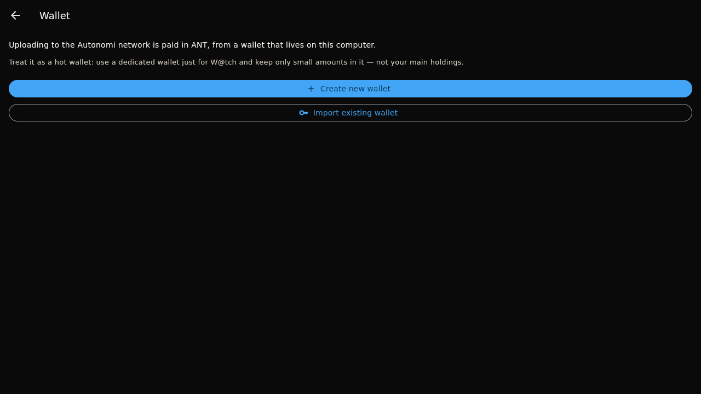
Choose Create new wallet. W@tch shows 12 recovery words — write them on paper and keep them somewhere safe. They are the only way to get your money back if this device is ever lost, and anyone who sees them can take the money, so don't photograph them or save them in a file. Tap I've written them down, then confirm by retyping the three words it asks for and press Create wallet.
Already have a wallet? Import existing wallet accepts a 12- or 24-word phrase or a private key instead.
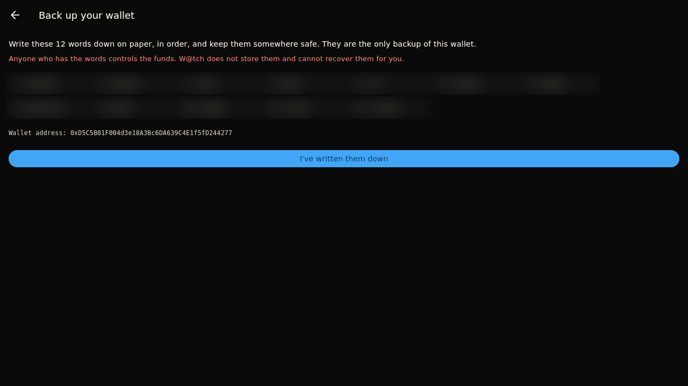
The wallet screen shows your address and two balances: ANT (pays for storage) and ETH (pays transaction fees). Send some of each to your address from an exchange or another wallet, choosing "Arbitrum One" as the network — that network choice matters, it's how these tokens travel. A few pounds' worth of each goes a long way; a feature film typically costs well under 1 ANT to store.
Treat it like cash in a pocket: keep only small amounts in this wallet and top it up when you need to.
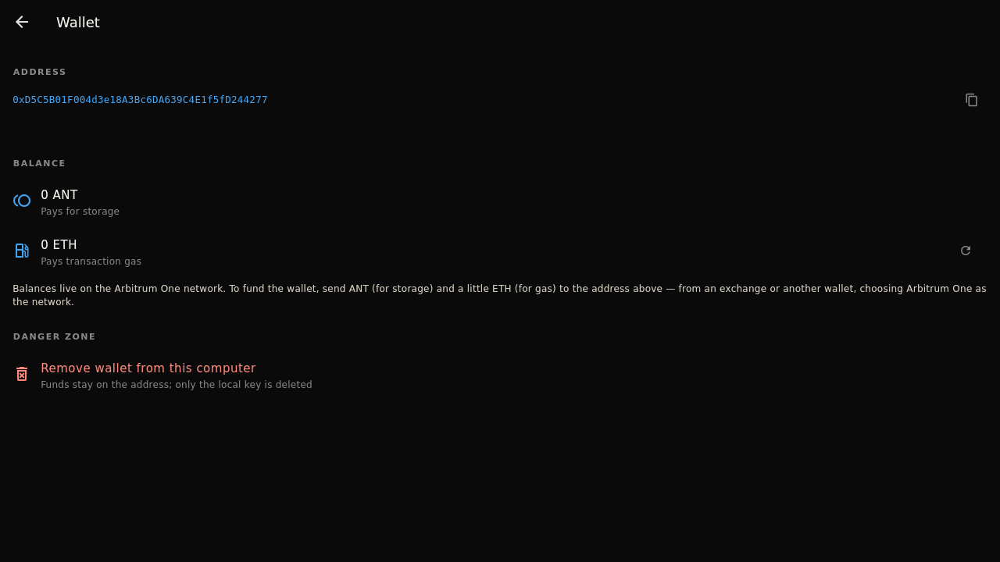
W@tch names your films and fetches posters from The Movie Database (TMDB). That needs a free key: sign up at themoviedb.org, request an API key in your account settings, and paste it into W@tch under Settings → METADATA → TMDB API key. Without one, video titles just come from the file names (music doesn't need any key).
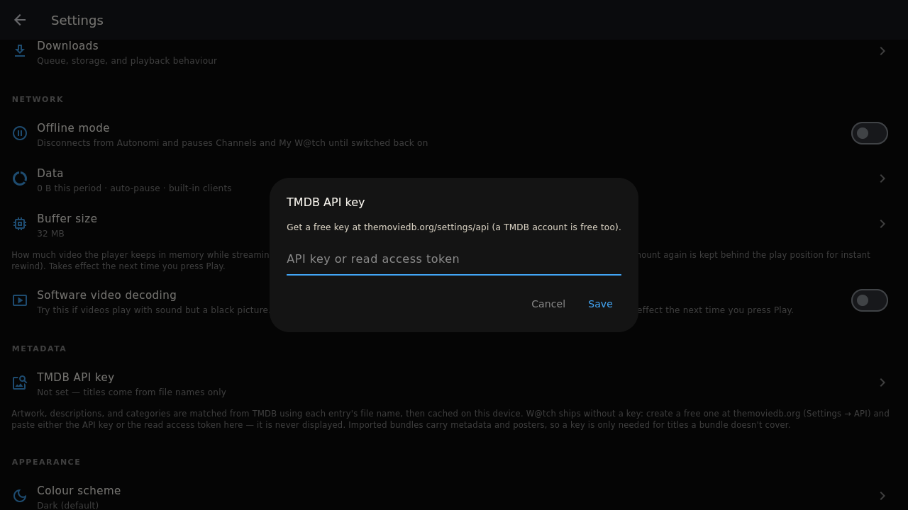
One file or a whole folder at once.
Go to Settings and choose Upload (it says "Private · only your devices" underneath). Read the short intro, then press Upload files or folders.
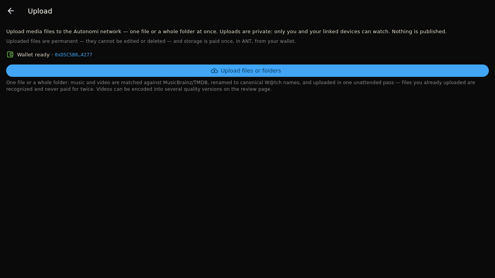
Press Add files and choose your videos or music — or on a computer, Add a folder to grab everything in a folder at once. All the common formats work (mp4, mkv, avi, mov, mp3, flac and more).
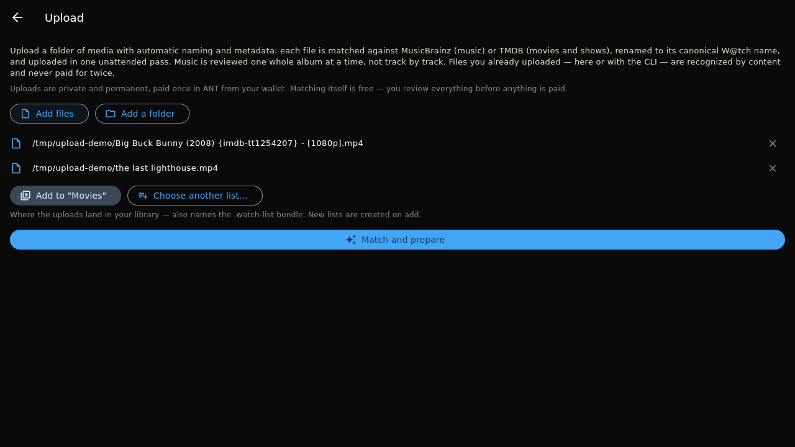
W@tch suggests a sensible home for them — Movies, TV Shows or Music. Press Choose another list… to pick a different one or Create a new list… to make one (say, "Home videos").
That starts the automatic identification step — next section.
Mostly automatic — you only step in when it isn't sure.
For each file W@tch does three things: it fingerprints the file (reads it once so anything you've already uploaded is recognised and never paid for twice — large files take a while), reads the technical details, and looks the title up on TMDB (videos) or MusicBrainz (music) to fetch the proper name, description and poster or cover art. Matched files are renamed to their official W@tch name — you don't type anything.
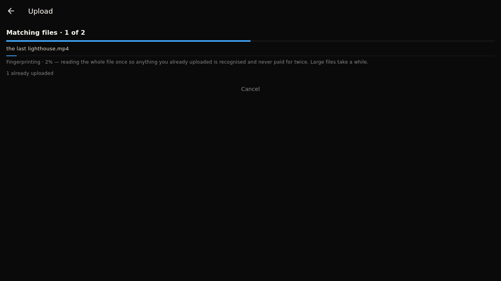
When W@tch isn't certain, it shows the file with its best guess. Press Use this match if it's right, or Search… to find the correct title. Music is reviewed one album at a time.
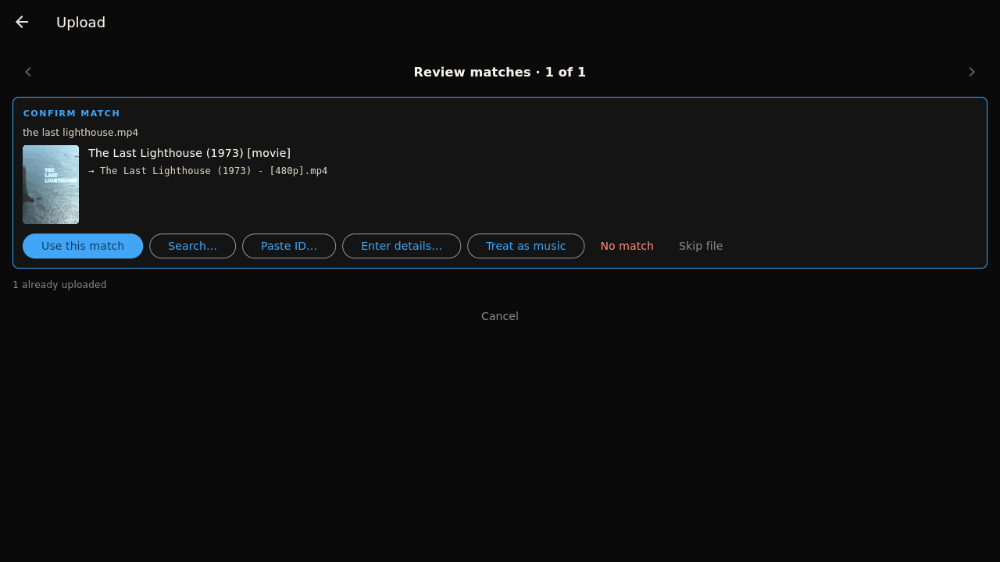
For anything that isn't in the databases — family videos, your own recordings — press Enter details… and fill in a title (plus year, artist, album and so on if you like), and optionally pick artwork. That's the only time you type metadata by hand.
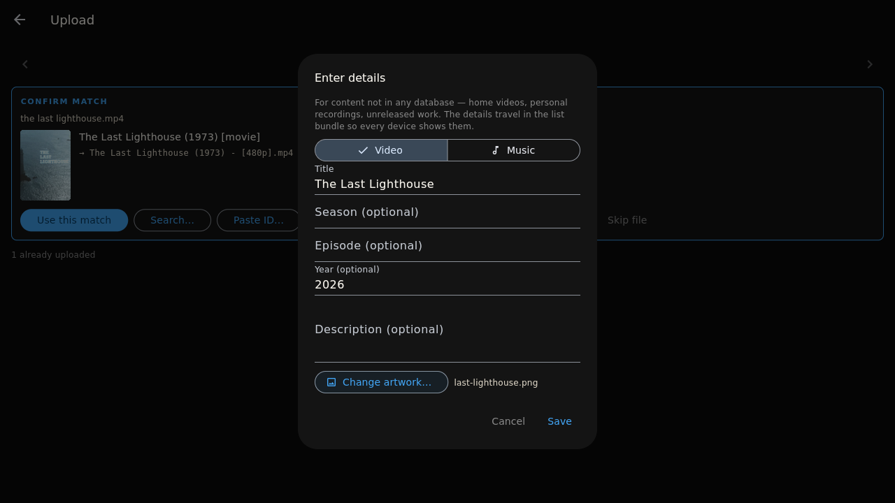
Why W@tch encodes your videos before uploading — and which boxes to tick.
Two facts drive it. First, a full-quality video file can stutter or fail entirely on phones, TVs and older computers, and needs a fast connection to stream without buffering — smaller versions play everywhere and start quickly even on slow links. Second, uploads to Autonomi are permanent: a file can't be swapped for a re-encoded copy later, so any quality you want your devices to have must be made and uploaded now.
That's why, before uploading, W@tch encodes your video into universally playable versions (H.264 video in an MP4 — the format every device on earth understands). You just tick which sizes you want:
| Option on screen | Best for |
|---|---|
| High · 1080p H.264 | Big TVs and fast connections — near-original quality |
| Medium · 720p H.264 | The sweet spot: plays smoothly almost anywhere |
| Low · 480p H.264 | Phones, slow internet, saving money |
| Original files (as-is) | Your untouched file, exactly as it is |
On the "Ready to upload" page, the QUALITY section lists the options with an estimated size next to each. You only see qualities that make sense for your files (nothing is ever upscaled), and the sensible ones come pre-ticked — the defaults are fine for almost everyone. Each ticked version is a separate upload with its own storage cost, so unticking sizes you'll never use saves money. Your library stays tidy either way: one card per title, with a version picker inside.
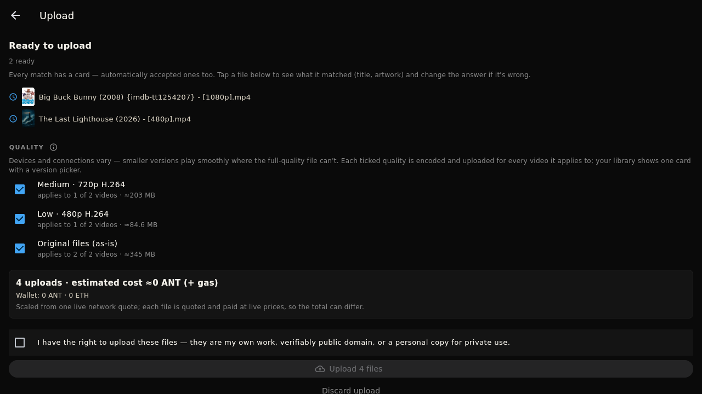
Encoding is computer-only — uploading from an Android phone sends files exactly as they are, with no quality versions. Music is never re-encoded anywhere; it uploads untouched.
You always see an estimate before anything is paid.
At the bottom of the review page W@tch fetches a live price from the network and shows something like "3 uploads · estimated cost ≈0.4 ANT (+ gas)", next to what's in your wallet. It's an estimate — each file is priced at the live rate when its turn comes, so the final total can differ a little. The small ETH "gas" fee comes on top.
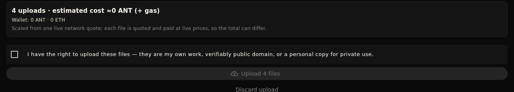
Tick the box: "I have the right to upload these files — they are my own work, verifiably public domain, or a personal copy for private use." The upload button stays grey until you do.
One last time: this is permanent and paid — there is no undo and no delete. Happy? Press Upload. (If W@tch recognised that everything is already on the network, the button says Add to library instead and finishing is completely free.)
What the progress screen means, and how your uploads reach your other devices.
Files go up one at a time, each moving through Encoding → Encrypting → Getting storage quotes → Paying → Storing chunks. You can use the rest of W@tch while it works — the upload carries on and the screen picks up where it left off when you come back. Just keep W@tch open until it finishes. Big files take a while; overnight is fine.
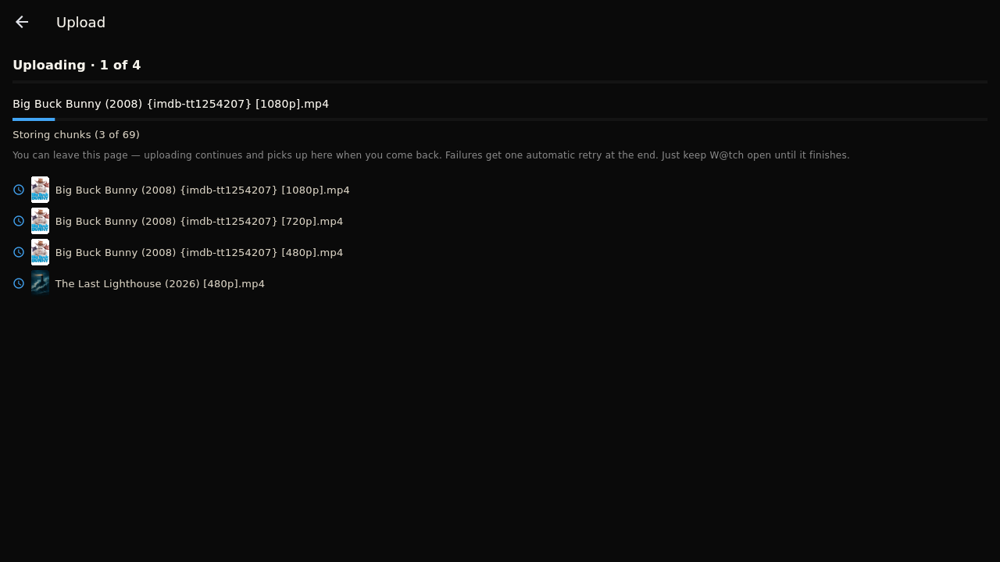
If the app closes mid-upload, the next launch asks "Finish an interrupted upload?" — choose Continue upload and it resumes. Anything that failed gets retried automatically at the end, and the finish page has a Retry failed button for stragglers. Thanks to fingerprinting, retrying never pays again for parts that already made it.
The finish page says "Upload finished" and your titles are already in the list you chose, with their posters, ready to play on this device. Private means private: nobody else on the network can see or watch them.
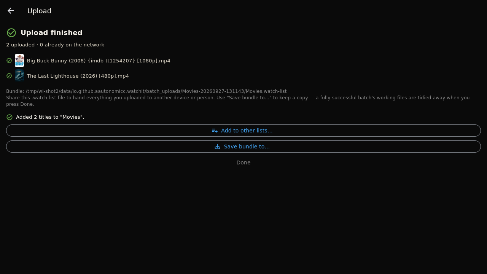
Devices linked through My W@tch receive your new titles automatically. For anything else — or to hand your uploads to a family member — press Save bundle to… on the finish page: it saves a small .watch-list file that another W@tch can open to get everything you uploaded. The media itself never needs sending again; it's on the network.
Stuck? Ask on GitHub — happy to help.
← Install guide Home page